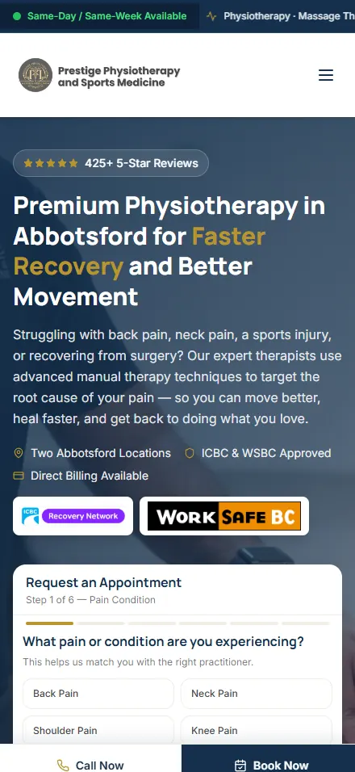
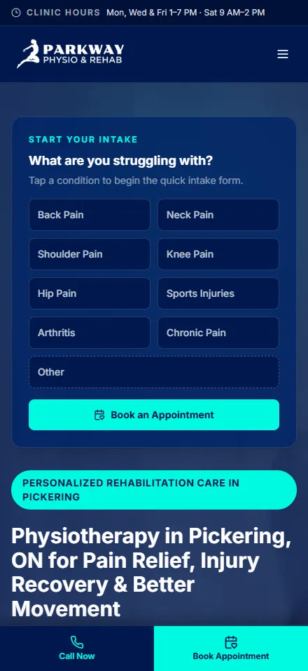
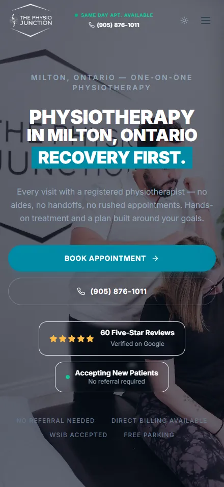
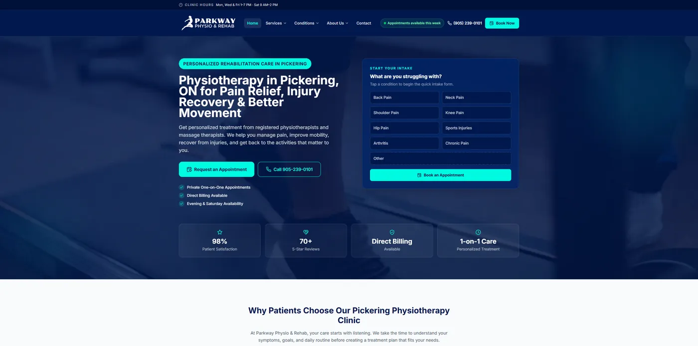
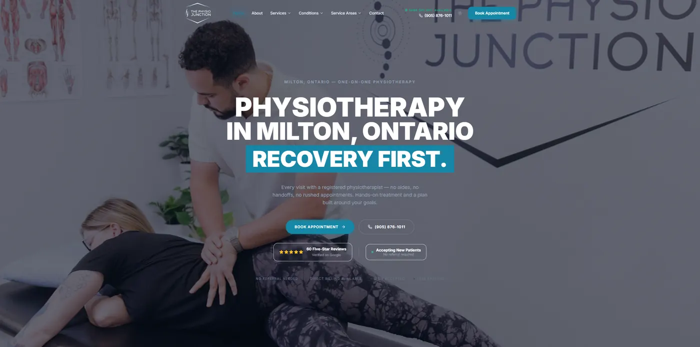

More patients.
Less guesswork.
kilomark is a marketing agency for physiotherapy clinics only. We build the website, Google Ads, local SEO and follow-up that turn people searching for a physio near them into booked assessments at your clinic.



Results we produced for our clients
Clinic names withheld. See the full results →
Built for clinic owners at every stage
You’re the expert in getting patients better. We’re the guide for getting them through your door.
Start-up clinics
You’ve invested everything into opening. We build your online presence from scratch and start driving bookings in weeks, not months.
Clinics in busy areas
When there are 10 clinics within 5 km, a good reputation isn’t enough. Local SEO, ads and reviews make you the obvious choice.
Niche-focused clinics
Sports, pelvic health, seniors’ rehab, pediatrics. We reach the patients your specialty is built for.
Growth-stage practices
You’re doing well and want more: more patients, more revenue, maybe another location. We build systems that scale.
Most agencies market your clinic like a pizza shop.
We don’t work with restaurants, lawyers or dentists. Every page, ad and email is built on how physio patients search, compare and decide. That focus is your edge.
See the Patient Acquisition Playbook →A typical agency
- Reports full of impressions and clicks
- The same playbook for dentists and restaurants
- Ads that send patients to your homepage
- Long contracts that lock you in
kilomark
- Reports show leads, bookings and cost per new patient
- Physio, chiro and massage clinics only
- Condition pages with a survey-style booking form
- Copy that follows your association’s guidelines
- Month to month after a 3-month start
One call. A clear plan. No pressure.
You’ll know exactly what’s working, what isn’t and what to do next, whether you work with us or not.
Discovery call
We learn about your clinic, where new patients come from today and what’s getting in the way.
- Your goals for the year ahead
- Your biggest pain points
- A quick review of what you’ve tried
- Whether we’re a good fit
Your 90-day plan
We map out exactly what the first 90 days would look like for your clinic.
- What we’d fix first, and why
- Realistic new-patient targets
- The program that fits your budget
- Your start date
Launch and report
We build, launch and track everything. You spend under 30 minutes a month on marketing.
- Tracking, website and Google profile fixed
- Ads and SEO live
- Monthly report: leads, bookings, cost per patient
One system that attracts, converts and keeps patients
Each service works on its own. Together they cover every step from a Google search to a patient’s tenth visit.
Search engine optimization (SEO)
Rank in Google Maps and local results for the conditions you treat.
Google Ads
Reach people searching for a physio right now, and track every booking.
Website design
Fast, mobile-first clinic sites with survey-style booking forms.
Social media management
Planned, designed and posted for you, three times a week.
Facebook & Instagram ads
Fill specific programs with local, targeted paid social.
Email marketing
Monthly newsletters and reactivation that bring past patients back.
Reputation management
More 5-star Google reviews, and a reply to every one.
Referral & reactivation
Turn happy patients and local physicians into a steady source.
Print marketing
Referral pads, mailers and brochures that point to online booking.
One free clinic website redesign in every 10 km.
If your clinic is the kind we’d love to work with long-term, we’ll redesign your website at no cost. Once a clinic claims its area, nobody else within 10 km can.
- Independent or small-group clinic
- Budget to invest in marketing after launch
- A team that can take on more patients
- Real competition in your area

What is one new patient worth to you?
Enter your fees and visit numbers to see patient value, monthly revenue and how many new patients it takes to cover your marketing.
Clinic websites built to book



More patients or it’s free.
If we don’t deliver a measurable increase in patient inquiries within your first 90 days, we keep working for free until we do. No fine print.
Questions clinic owners ask
Don't see yours? Bring it to your discovery call and you'll get a straight answer.
We’ve been burned by agencies before. How is kilomark different?
We only work with physiotherapy, chiropractic and massage therapy clinics. Reports show patient inquiries, bookings and cost per new patient, not impressions. And the first 90 days are backed by our performance guarantee.
How quickly will we see new patients?
Google Ads usually bring inquiries within the first 1–2 weeks. SEO builds over 3–6 months. Most clinics start with both: ads for patients now, SEO for steady growth.
What does it cost?
Programs are tailored, and most clinics invest $1,050–$3,000 a month in management, plus ad spend paid directly to Google or Meta. Use the ROI calculator to see what that could return for your clinic.
Are we locked into a long contract?
No. We recommend a 3-month start because marketing needs time to build, and after that you stay because it works.
How much of my time does this take?
About 60 minutes for onboarding, then under 30 minutes a month to review your report. We handle strategy, execution and reporting.
Your competitors are marketing right now. Are you?
Every week without a system is a week the clinic down the street books the patients who should be booking with you. Start with a 30-minute discovery call.